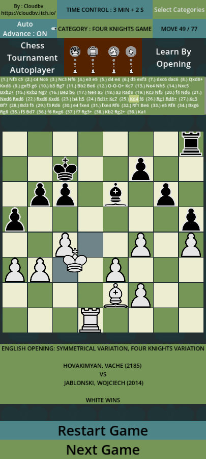

ChessAutoplay (Learn By Opening)
Live on Google Play
- What it does
- Replays real 2000+ Elo Lichess games move by move, grouped by opening and time control. Eight openings, nine time controls, and any move in the notation is clickable.
- The data pipeline
- A Python tool cleans huge Lichess PGN exports, filters by opening, Elo, result and time control, and writes one short file per game.
- The parser
- Written from scratch in GDScript. It handles castling, en passant and promotion, and drives a board of 64 square scenes.
- Godot 4
- GDScript
- Python
- Live on Play Store